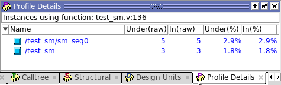
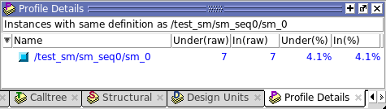

The Profile
Details window increases visibility into simulation performance.
Right-clicking any function in the Ranked or Call Tree windows opens
a popup menu that includes a Function Usage selection. When you
select Function Usage, the Profile Details window opens and displays
all instances that use the selected function.
Procedure
- View
the Profile Details of a function in the Call Tree window.
- Right-click the test_sm.v:136 function in
the Call Tree window and select Function Usage from the popup menu.
The Profile Details window
displays all instances using function Tcl_WaitForEvent (Figure 1). The statistical performance data
show how much simulation time is used by Tcl_WaitForEvent in each
instance.
Figure 1. Profile Details of the Function Tcl_Close 
When
you right-click a selected function or instance in the Structural window,
the popup menu displays either a Function Usage selection or an
Instance Usage selection, depending on the object selected.
- View
the Profile Details of an instance in the Structural window.
- Select
the Structural tab to change to the Structural profiling window.
- Right-click
test_sm and select Expand All from the popup menu.
- Verilog:
Right-click the sm_0 instance and select Instance Usage from the
popup menu. The Profile Details shows all instances with the same definition
as /test_sm/sm_seq0/sm_0 (Figure 2).
Figure 2. Profile Details
of Function sm_0 
VHDL:
Right-click the dut instance and select Instance Usage from the
popup menu. The Profile Details shows all instances with the same
definition as /test_sm/dut.